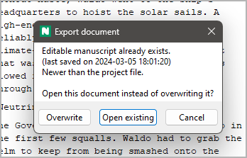
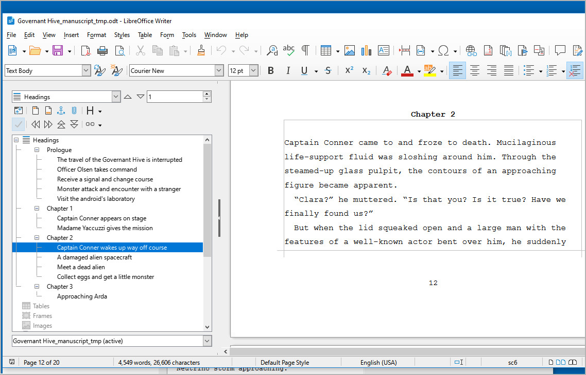
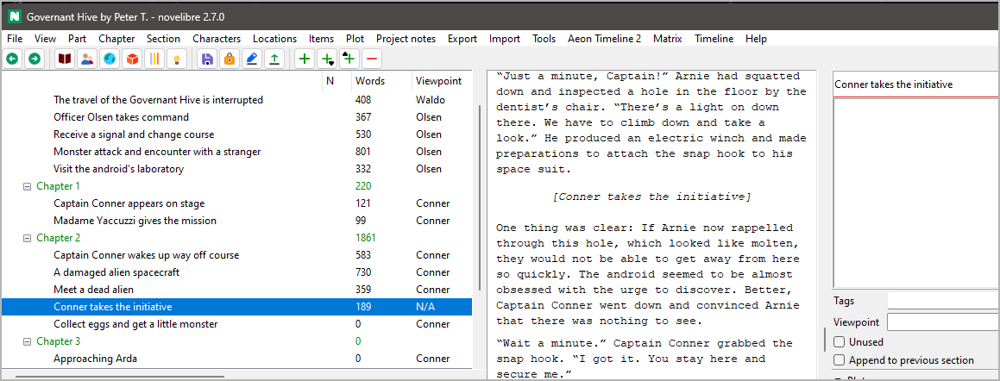

Writing the manuscript
Starting Writer as text editor
Note
The following example describes the manuscript editing workflow with LibreOffice. The same applies to OpenOffice.
Other word processing programs that claim to support the ODT file format are generally not recommended.
As soon as your novel project has at least one section, you can start
writing. For this, you save your project and export your novel
to the Writer word processor either with Export > Manuscript for editing,
or by clicking on the  toolbar icon.
toolbar icon.
Hint
If you use the menu command, you can have novelibre create a manuscript, and ask whether it should be opened with Writer.
If you click on the toolbar icon, Writer will be launched immediately after export.
If you have done this before and there is still a manuscript document from the previous writing session, you will now be asked whether you want to continue working on this document. If this is the case, answer “Open existing”.
If you answer “Overwrite”, novelibre creates a new manuscript document. “Cancel” aborts the export process and lets you return to the main window.
Hint
novelibre checks whether an existing manuscript is newer or older
than the open project, and suggests a choice by activating the
appropriate button. You can accept it by hitting the Enter key.
If your choice follows the suggestion, you see a message in green
at the status bar. Otherwise, the message is displayed in yellow,
just as a reminder.
If you started the export using the Export menu command, you may be asked whether you want to open the newly created document, depending of your Export settings.
If you answer “yes”, Writer will be launched with the manuscript document. Otherwise, the document is just kept for future use.
Depending on your Export settings, novelibre now may lock the project, so that it can’t be accidentally modified with novelibre while worked on in Writer.
Note
novelibre starts your standard application for files with the .odt extension. Usually, the setting is made by LibreOffice or OpenOffice during installation.
After you change to Writer, you see the whole novel in
a layout that is similar to the “standard manuscript format”. The
Navigator (open with F5) shows the chapter and section titles
in the Headings area. Double click on a heading to move the cursor
to that location. You can now write within the frames that define
the sections.
The following picture shows a LibreOffice Writer screenshot. Note that the text boundaries are made visible here, which is highly recommended.
Note
The section titles displayed in the Navigator are invisible in the workspace so that they do not disrupt the flow of writing, and the impression of an original manuscript page is retained.
Writing changes back to novelibre
At the end of the writing session, save the changes, exit the Writer
word processor, and return to novelibre. Simply click on the
 toolbar icon, and your latest changes will
appear.
toolbar icon, and your latest changes will
appear.
Note
The toolbar icon mentioned above is only for the manuscript. If you want to apply changes made in other documents like character sheets or synopses, use the Import menu.
Creating new sections with Writer
If you need a new section while writing, you don’t have to switch
to novelibre. Simply start a new line with a special marker
###. Optionally, you can add a section title, and, separated
by |, a section description. All other metadata is intended
to be entered in novelibre later.
Tip
You can use #### to create an appended section.
The following example shows how to split an existing section:
The following picture shows a LibreOffice Writer screenshot. Notice the highlighted section marker
Back in novelibre, you see the new section. It has got a title, but no other metadata.
Notice the selected new section in the screenshot.
Creating new chapters with Writer
If you need a new chapter while writing, you don’t have to switch to novelibre. Simply assign a new line within the edited section the Heading 2 style.
Important
novelibre only reimports text within section defining frames. Technically, it always splits sections when creating new chapters or sections from the manuscript.
You also cannot move chapters within Writer. If you want to rearrange chapters or sections, do it with novelibre.
The following example shows how to add a chapter with Writer:

It doesn’t matter what the new chapter is titled.
Back in novelibre, you see a new chapter and a new section. Since the chapters are auto-numbered in this example project, the new chapter title already fits, while the new section’s title should be adjusted manually.